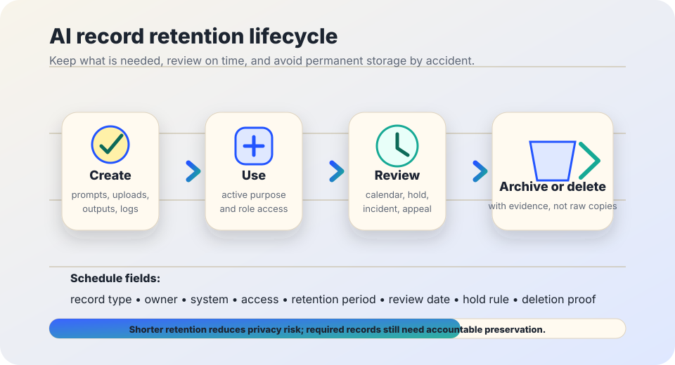

AI governance basics
AI record retention schedule.
A practical way to decide how long to keep AI prompts, uploads, outputs, logs, evaluations, incident records, appeals, and deletion evidence — without turning every experiment into a permanent file.
The short answer
An AI retention schedule says which AI-related records are kept, who owns them, how long they are retained, when they are reviewed, and how deletion is confirmed. It should be written before a workflow goes live, not after storage has already sprawled across tools, exports, chat histories, and vendor dashboards.
This page is not legal advice. Retention duties vary by jurisdiction, sector, contract, litigation hold, public-records law, privacy law, records-management policy, and whether a system affects rights, safety, benefits, employment, education, health, housing, or public services.

Why AI needs its own retention questions
AI workflows create records in places teams may not treat as official systems of record: prompts, pasted documents, uploaded files, vector indexes, embeddings, generated outputs, evaluation examples, audit trails, chat histories, screenshots, error logs, vendor usage dashboards, and exported reports. Some records are needed for accountability; others create needless privacy, security, and fairness risk if kept by default.
The NIST Privacy Framework frames privacy risk management around identifying, governing, controlling, communicating, and protecting data processing. The ICO storage limitation guidance says personal data should not be kept longer than necessary. The NIST AI Risk Management Framework emphasizes governance, mapping context, measuring risks, managing risks, documentation, and accountability. OMB M-24-10 directs U.S. federal agencies to strengthen AI governance and risk management, including documentation and oversight for higher-impact uses. NARA records-management language is a useful reminder that retention responsibilities should be named in contracts and systems, not left implicit.
First-pass retention checklist
- □ Name the workflow owner responsible for retention, access, holds, review, and deletion.
- □ List every place AI-related records are created: local files, vendor tools, logs, analytics, tickets, email, shared drives, databases, and exports.
- □ Separate records needed for service delivery from records needed for evaluation, audit, incident response, appeals, or legal obligations.
- □ Set the shortest practical retention period for each category unless a specific rule requires longer.
- □ Define what must be deleted, anonymized, aggregated, archived, or preserved under hold.
- □ Document who can access retained prompts, uploads, outputs, logs, vendor dashboards, and incident records.
- □ Schedule review dates for high-risk workflows and records containing personal or sensitive data.
- □ Keep deletion evidence without keeping the deleted content itself.
Starter schedule to adapt
| Record type | Why keep it? | Safer default | Review trigger |
|---|---|---|---|
| Prompts and chat histories | Debugging, quality review, user support, audit trail when decisions are affected. | Do not keep by default for low-risk drafting. If kept, shorten retention and restrict access. | Contains personal data, sensitive details, or decision rationale. |
| Uploaded files and source documents | Temporary processing, case work, translation, summarization, extraction. | Delete after task completion unless an existing records rule requires storage elsewhere. | Whole-file upload, hidden metadata, or sensitive categories. |
| Generated outputs | Drafts, summaries, recommendations, notices, action items, explanations. | Keep final human-approved records where needed; avoid storing speculative drafts as permanent facts. | Output affects a person, benefit, service, discipline, eligibility, or safety. |
| System logs and analytics | Security, abuse detection, monitoring, performance, troubleshooting. | Collect minimum fields, rotate logs, limit dashboard access, and avoid logging full prompts when possible. | Logs include user IDs, prompts, output text, location, device, or account details. |
| Evaluations and test sets | Measure accuracy, bias, reliability, accessibility, and local fit over time. | Prefer synthetic, redacted, aggregated, or sampled data when it works; document provenance. | Test data includes real people or protected/sensitive attributes. |
| Audit trails | Show who used the system, when, what changed, who approved, and whether review happened. | Keep enough metadata to support accountability, not unlimited raw content. | Workflow affects rights, safety, public services, or official decisions. |
| Incidents, appeals, and corrections | Repair harm, investigate failures, document notice, show corrective action, learn from patterns. | Keep according to incident, complaint, appeal, public-records, or legal-hold requirements; separate from routine logs. | Human appeal, complaint, data breach, safety issue, or disputed decision. |
| Deletion evidence | Show that deletion, anonymization, or vendor removal was completed. | Keep confirmation metadata: date, category, system, approver, method, and exception reason — not the deleted content. | Exception, hold, failed deletion, or vendor cannot confirm removal. |
Practical retention patterns
Default delete
Start with deletion after task completion for temporary prompts, uploads, and drafts unless a named rule justifies retention.
Final vs. draft
Keep the human-approved final record when needed; avoid preserving every AI draft as if it were verified history.
Metadata over content
For accountability, a timestamp, owner, workflow ID, review result, and deletion confirmation may be enough without raw personal data.
Hold override
Pause deletion when a valid legal, public-records, audit, investigation, appeal, or incident hold applies. Record who approved the hold.
Vendor match
Match local schedules to vendor settings and contracts. A local deletion rule fails if the vendor keeps prompts or uploads longer.
Calendar review
Put review dates on the calendar. “Someone will clean it later” usually becomes indefinite retention.
Bad signs
- Warning: Nobody can name where prompts, uploads, outputs, and logs are stored.
- Warning: The vendor dashboard keeps history by default and no one has checked the retention setting.
- Warning: AI-generated drafts become permanent records without human review or source context.
- Warning: A team deletes raw data but keeps screenshots, exports, embeddings, tickets, or copied examples elsewhere.
- Warning: Retention periods are described as “forever,” “until storage is full,” or “we have never needed to delete it.”
- Warning: Deletion evidence includes the same personal data that was supposed to be deleted.
Starter policy language
Copy and adapt: “For AI-assisted workflows, we keep AI-related records only for the approved purpose and required retention period. The workflow owner maintains a schedule for prompts, uploads, outputs, logs, evaluations, audit trails, incidents, appeals, corrections, and deletion evidence. Temporary AI records are deleted after task completion unless a named rule, review need, incident, appeal, audit, public-records duty, contract, or legal hold requires retention. Access to retained records is limited by role, and vendor retention settings must match this schedule.”
Replace the broad categories with local record names, owners, retention periods, systems, exceptions, and review dates before using this in a real policy.
Sources and further reading
- NIST — Privacy Framework.
- UK Information Commissioner’s Office — Storage limitation.
- NIST — AI Risk Management Framework.
- NIST — Artificial Intelligence Risk Management Framework (AI RMF 1.0).
- U.S. Office of Management and Budget — M-24-10: Advancing Governance, Innovation, and Risk Management for Agency Use of Artificial Intelligence.
- U.S. National Archives and Records Administration — Records management language for contracts.